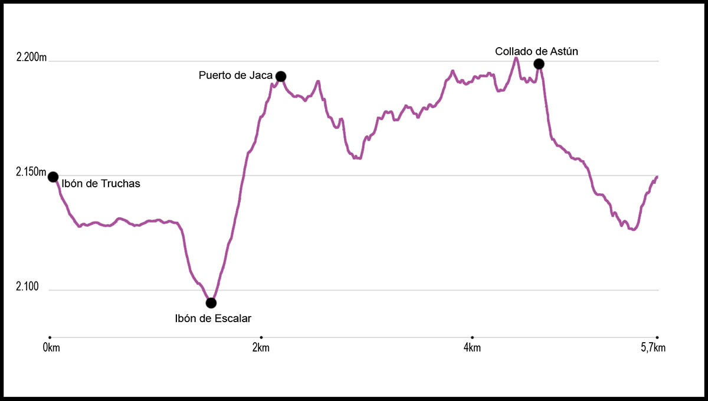

Una vez bajamos del telesilla “Los Lagos”, tomamos la pista hacia el Ibón de Escalar o de Ranas. La pista es llana, y una vez llegados a su final y divisado el lago, tomamos una senda y bajamos hasta él, dejándolo a nuestra izquierda. Una vez pasado el ibón, seguimos una senda muy marcada, que ascendiendo y haciendo una curva a la derecha, llega al collado de Los Monjes o Puerto de Jaca, donde encontramos un plano y una señal indicativa. A partir de este momento, entramos en parque nacional, donde habrá que cumplir la normativa del mismo (entre otras no se pueden llevar perros).
En este momento, tomaremos una senda que sale a nuestra derecha, y que empieza de forma ligeramente ascendente. Este sendero lo seguiremos durante gran parte de la ruta que tenemos por delante. Poco a poco ganamos la altura necesaria para ir bordeando el circo de Bious que da vista al Midi d´Ossau. Casi sin subidas, ni bajadas, avanzaremos en un nuestra ruta para llegar al collado de Astún. Justo en este punto, en el que volveremos a entrar a España, empezaremos la última bajada, la cual nos llevará por un cómodo y ancho sendero hasta el ibón de Truchas, justo al lado de la silla desde la que hemos empezado nuestra ruta.
